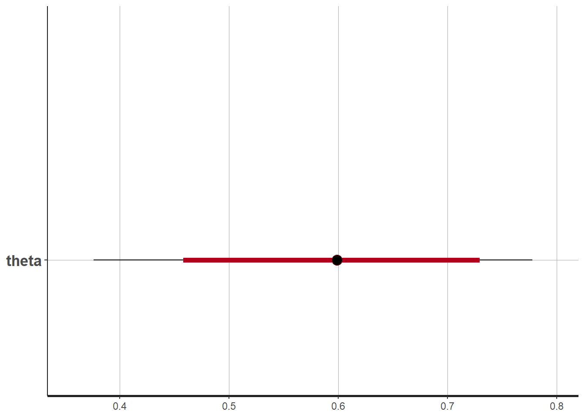
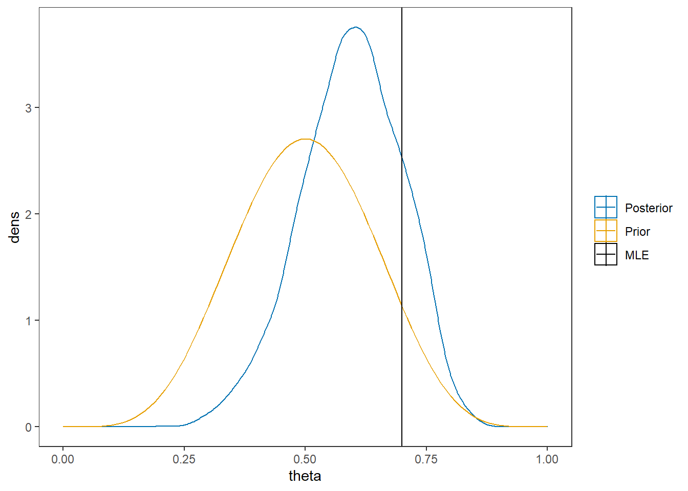
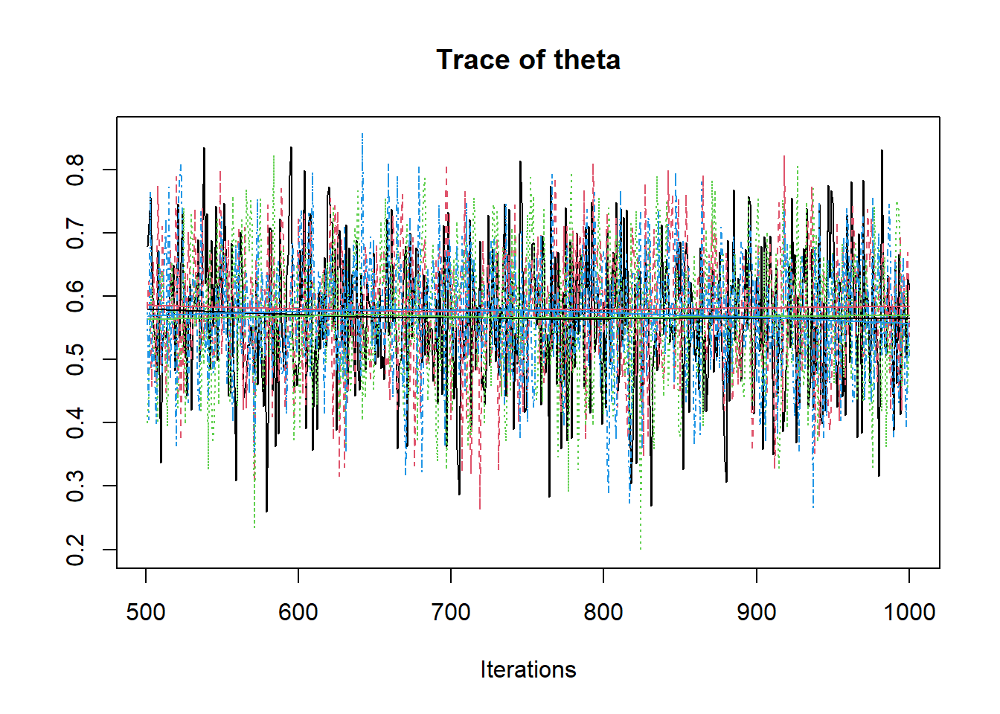
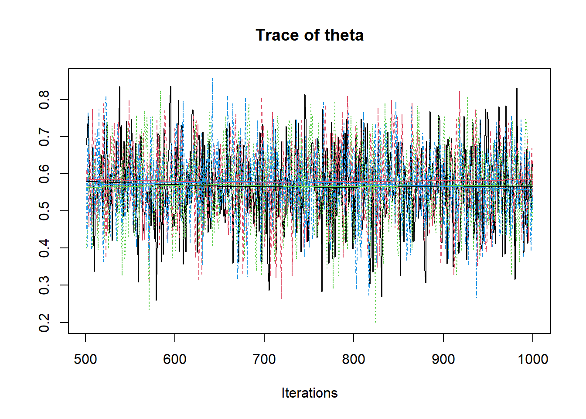
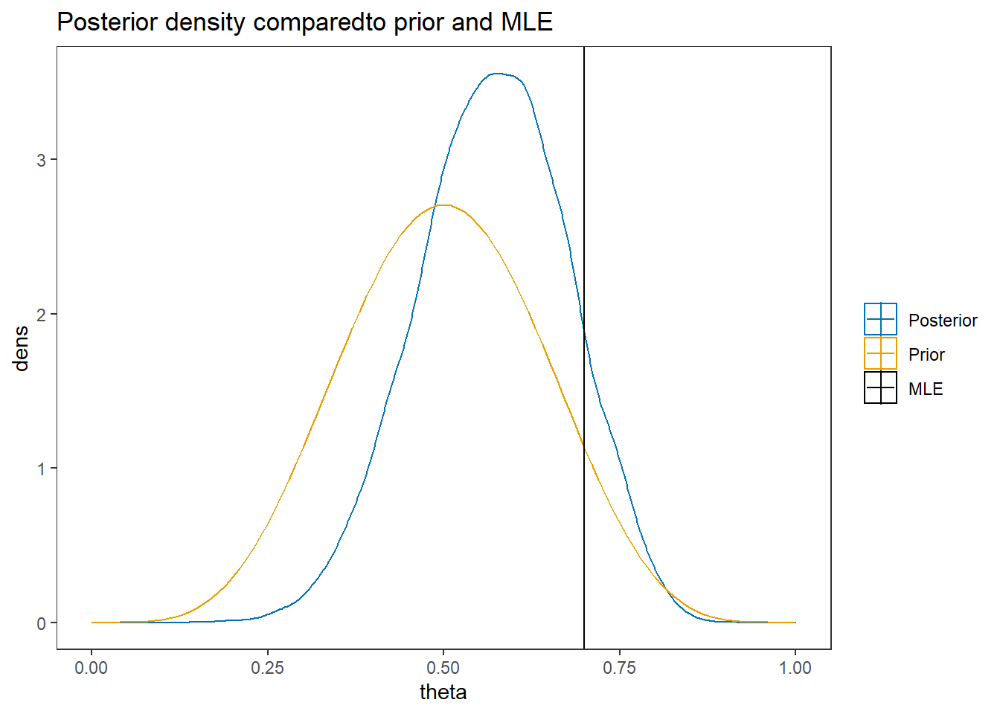

2.2 Beta-Bernoulli Example
For this next example, I use the same data as the previous model. But now, instead of treating the individual events as part of a whole and sum over the successes, I will treat the model in a more hierarchical manner. A hierarchical model here simply implies that I’ll be using the same probability function for all individual observations. We express this by saying that the observations depend on the index (\(j=1, 2, ..., J\)) but that the parameter of interest does not vary across \(j\). Two DAG representations similar to the previous examples are shown below. The major difference in these representations from the previous example is the inclusion of a plate that represents the observations depend on the index \(j\).

Figure 2.4: DAG for the beta-bernoulli model
Figure 2.5: DAG with explicit representation for all beta-bernoulli model components
In my favor representation, this model can be expressed as

Figure 2.6: Model specification diagram for beta-bernoulli model
We will use the same \(\mathrm{Beta}(\alpha, \beta)\) prior for \(\theta\) as in the previous example. The model code changes to the following,
2.2.1 Computation using Stan
model_beta_bernoulli <- '
// data block needs to describe the variable
// type (e.g., real, int, etc.) and the name
// in the data object passed
data {
int J;
int y[J]; //declare observations as an integer vector of length J
real alpha;
real beta;
}
// parameters block needs to specify the
// unknown parameters
parameters {
real<lower=0, upper=1>theta;
}
// model block needs to describe the data-model
// and the prior specification
model {
for(j in 1:J){
y[j] ~ bernoulli(theta);
}
theta ~ beta(alpha, beta);
}
// there must be a blank line after all blocks
'
# data must be in a list
mydata <- list(
J = 10,
y = c(1,0,1,1,0,0,1,1,1,1),
alpha = 6,
beta = 6
)
# start values can be done automatically by stan or
# done explicitly be the analyst (me). I prefer
# to try to be explicit so that I can *try* to
# guarantee that the initial chains start.
# The values can be specified as a function
# which lists the values to the respective
# parameters
start_values <- function(){
list(theta = 0.5)
}
# Next, need to fit the model
# I have explicited outlined some common parameters
fit <- stan(
model_code = model_beta_bernoulli, # model code to be compiled
data = mydata, # my data
init = start_values, # starting values
chains = 4, # number of Markov chains
warmup = 1000, # number of warmup iterations per chain
iter = 2000, # total number of iterations per chain
cores = 2, # number of cores (could use one per chain)
refresh = 0 # no progress shown
)## Warning in system(paste(CXX, ARGS), ignore.stdout = TRUE, ignore.stderr =
## TRUE): '-E' not found# first get a basic breakdown of the posteriors
print(fit, pars="theta")## Inference for Stan model: 7a99cbb09826cf6efe5d323426433fa9.
## 4 chains, each with iter=2000; warmup=1000; thin=1;
## post-warmup draws per chain=1000, total post-warmup draws=4000.
##
## mean se_mean sd 2.5% 25% 50% 75% 97.5% n_eff Rhat
## theta 0.59 0 0.1 0.38 0.52 0.59 0.66 0.78 1434 1
##
## Samples were drawn using NUTS(diag_e) at Mon Apr 05 01:17:02 2021.
## For each parameter, n_eff is a crude measure of effective sample size,
## and Rhat is the potential scale reduction factor on split chains (at
## convergence, Rhat=1).# plot the posterior in a
# 95% probability interval
# and 80% to contrast the dispersion
plot(fit, pars="theta")
# traceplots
rstan::traceplot(fit, pars = c("theta"), inc_warmup = TRUE)
# plot the posterior density
posterior <- as.matrix(fit)
plot_title <- ggtitle("Posterior distributions",
"with medians and 80% intervals")
mcmc_areas(
posterior,
pars = c("theta"),
prob = 0.8) +
plot_title
# I prefer a posterior plot that includes prior and MLE
MLE <- 0.7
prior <- function(x){dbeta(x, 6, 6)}
x <- seq(0, 1, 0.01)
prior.dat <- data.frame(X=x, dens = prior(x))
cols <- c("Posterior"="#0072B2", "Prior"="#E69F00", "MLE"= "black")#"#56B4E9", "#E69F00" "#CC79A7"
ggplot()+
geom_density(data=as.data.frame(posterior),
aes(x=theta, color="Posterior"))+
geom_line(data=prior.dat,
aes(x=x, y=dens, color="Prior"))+
geom_vline(aes(xintercept=MLE, color="MLE"))+
scale_color_manual(values=cols, name=NULL)+
theme_bw()+
theme(panel.grid = element_blank())
2.2.2 Computation using WinBUGS (OpenBUGS)
Here, I am simply contrasting the computation from Stan to how BPM describes the computations using WinBUGS. First, let’s take a look at the model described by BPM on p. 41.
# A model block
model{
#################################
# Prior distribution
#################################
theta ~ dbeta(alpha,beta)
#################################
# Conditional distribution of the data
#################################
for(j in 1:J){
y[j] ~ dbern(theta)
}
}
# data statement
list(J=10, y=c(1,0,1,0,1,1,1,1,0,1), alpha=6, beta=6)The code is similar to style to the code used for calling Stan. However you’ll notice a difference in how a probability distribution is referenced.
# model code
model.file <- paste0(w.d,"/code/Bernoulli/Bernoulli Model.bug")
# get data file
data.file <- paste0(w.d,"/code/Bernoulli/Bernoulli data.txt")
# starting values
start_values <- function(){
list(theta=0.5)
}
# vector of all parameters to save
param_save <- c("theta")
# fit model
fit <- openbugs(
data= data.file,
model.file = model.file, # R grabs the file and runs it in openBUGS
parameters.to.save = param_save,
inits=start_values,
n.chains = 4,
n.iter = 2000,
n.burnin = 1000,
n.thin = 1
)## Sampling has been started ...print(fit)## Inference for Bugs model at "C:/Users/noahp/Box/Research/Morgan-Padgett/Bayesian-Psychometric-Modeling/code/Bernoulli/Bernoulli Model.bug", fit using OpenBUGS,
## 4 chains, each with 2000 iterations (first 1000 discarded)
## n.sims = 4000 iterations saved
## mean sd 2.5% 25% 50% 75% 97.5% Rhat n.eff
## theta 0.6 0.1 0.4 0.5 0.6 0.7 0.8 1 1500
## deviance 13.2 1.1 12.2 12.3 12.7 13.5 16.3 1 1600
##
## For each parameter, n.eff is a crude measure of effective sample size,
## and Rhat is the potential scale reduction factor (at convergence, Rhat=1).
##
## DIC info (using the rule, pD = Dbar-Dhat)
## pD = 0.4 and DIC = 13.6
## DIC is an estimate of expected predictive error (lower deviance is better).posterior <- fit$sims.matrix
plot_title <- ggtitle("Posterior distributions",
"with medians and 80% intervals")
mcmc_areas(
posterior,
pars = c("theta"),
prob = 0.8) +
plot_title
MLE <- 0.7
prior <- function(x){dbeta(x, 6, 6)}
x <- seq(0, 1, 0.01)
prior.dat <- data.frame(X=x, dens = prior(x))
cols <- c("Posterior"="#0072B2", "Prior"="#E69F00", "MLE"= "black")#"#56B4E9", "#E69F00" "#CC79A7"
ggplot()+
geom_density(data=as.data.frame(posterior),
aes(x=theta, color="Posterior"))+
geom_line(data=prior.dat,
aes(x=x, y=dens, color="Prior"))+
geom_vline(aes(xintercept=MLE, color="MLE"))+
labs(title="Posterior density comparedto prior and MLE")+
scale_color_manual(values=cols, name=NULL)+
theme_bw()+
theme(panel.grid = element_blank())
2.2.3 Computation using JAGS (R2jags)
Here, I utilize JAGS, which is nearly identical to WinBUGS in how the underlying mechanics work to compute the posterior but is easily to use through R.
# model code
jags.model <- function(){
#################################
# Conditional distribution of the data
#################################
for(j in 1:J){
y[j] ~ dbern(theta)
}
#################################
# Prior distribution
#################################
theta ~ dbeta(alpha,beta)
}
# data
mydata <- list(
J = 10,
y = c(1,0,1,1,0,0,1,NA,1,1),
alpha = 6,
beta = 6
)
# starting values
start_values <- function(){
list("theta"=0.5)
}
# vector of all parameters to save
param_save <- c("theta")
# fit model
fit <- jags(
model.file=jags.model,
data=mydata,
inits=start_values,
parameters.to.save = param_save,
n.iter=1000,
n.burnin = 500,
n.chains = 4,
n.thin=1,
progress.bar = "none")## Compiling model graph
## Resolving undeclared variables
## Allocating nodes
## Graph information:
## Observed stochastic nodes: 9
## Unobserved stochastic nodes: 2
## Total graph size: 14
##
## Initializing modelprint(fit)## Inference for Bugs model at "C:/Users/noahp/AppData/Local/Temp/RtmpyqRSeb/model312454083d2a.txt", fit using jags,
## 4 chains, each with 1000 iterations (first 500 discarded)
## n.sims = 2000 iterations saved
## mu.vect sd.vect 2.5% 25% 50% 75% 97.5% Rhat n.eff
## theta 0.569 0.104 0.359 0.499 0.570 0.640 0.765 1.004 700
## deviance 12.218 0.970 11.458 11.550 11.852 12.507 14.973 1.003 790
##
## For each parameter, n.eff is a crude measure of effective sample size,
## and Rhat is the potential scale reduction factor (at convergence, Rhat=1).
##
## DIC info (using the rule, pD = var(deviance)/2)
## pD = 0.5 and DIC = 12.7
## DIC is an estimate of expected predictive error (lower deviance is better).# extract posteriors for all chains
jags.mcmc <- as.mcmc(fit)
R2jags::traceplot(jags.mcmc) 

# convert to singel data.frame for density plot
a <- colnames(as.data.frame(jags.mcmc[[1]]))
plot.data <- data.frame(as.matrix(jags.mcmc, chains=T, iters = T))
colnames(plot.data) <- c("chain", "iter", a)
plot_title <- ggtitle("Posterior distributions",
"with medians and 80% intervals")
mcmc_areas(
plot.data,
pars = c("theta"),
prob = 0.8) +
plot_title
MLE <- 0.7
prior <- function(x){dbeta(x, 6, 6)}
x <- seq(0, 1, 0.01)
prior.dat <- data.frame(X=x, dens = prior(x))
cols <- c("Posterior"="#0072B2", "Prior"="#E69F00", "MLE"= "black")#"#56B4E9", "#E69F00" "#CC79A7"
ggplot()+
geom_density(data=plot.data,
aes(x=theta, color="Posterior"))+
geom_line(data=prior.dat,
aes(x=x, y=dens, color="Prior"))+
geom_vline(aes(xintercept=MLE, color="MLE"))+
labs(title="Posterior density comparedto prior and MLE")+
scale_color_manual(values=cols, name=NULL)+
theme_bw()+
theme(panel.grid = element_blank())